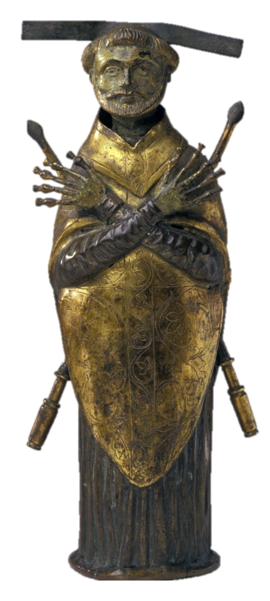

Les saints et les saintes de Dieu s’avancent vers le roi des cieux,
Par leurs hymnes de joie, ils célèbrent sans fin celui qui donne vie !
1 - Je vis la gloire de Dieu revêtue de sa puissance.
Devant lui se tient une louange éternelle : Saint, saint, saint le Seigneur !
2 - Je vis paraître son Fils resplendissant de lumière.
Il est le Seigneur, le sauveur de tous les hommes : Saint, saint, saint le Seigneur !
3 - Je vis descendre des cieux l’Esprit qui rend témoignage.
Par ce don gratuit, nous devenons fils du Père : Saint, saint, saint le Seigneur !